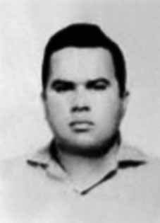

Marco
Antônio
Braz
de Carvalho
CIRCUNSTÂNCIAS DA MORTE
Marco Antônio foi alvejado pelas costas com 18 tiros, em sua casa, na capital paulista, por policiais do DOPS/SP, chefiados pelo delegado Raul Nogueira de Lima, mais conhecido como Raul Careca. Seu corpo foi sepultado, pela família, no cemitério de Vila Formosa (SP). Em Relatório Secreto elaborado pelo II Exército sobre a Vanguarda Popular Revolucionária (VPR), concluído em fevereiro de 1969, era apresentada a versão de que “Marquito”, codinome de Marco Antônio, foi “morto ao reagir à prisão”. Corroborando com o indicado no Relatório Secreto, a requisição do seu exame cadavérico no Instituto Médico-Legal de São Paulo (IML/SP), registrada sob o n° 455 consta que “[…] a vítima estava sendo procurada pelo DOPS, travou tiroteio com policiais, sendo abatido a tiros na Rua Fortunato, 291”. Ao seu final, os legistas Erasmo M. de Castro de Tolosa e Orlando Brandão apontaram como causa da morte “hemorragia interna traumática”. A despeito da versão apresentada pelo II Exército e pelos legistas do IML/SP, João Pedro Braz de Carvalho, irmão de Marco Antônio, por meio de depoimento prestado em 21 de novembro de 2002 à CEMDP, apontou as seguintes inconsistências à versão do agente Raul Careca do DOPS/SP: […] quando o cadáver foi colocado numa saleta, levantei o lençol que o cobria e constatei a existência de perfurações de saídas de projéteis de arma de fogo no tórax, caracterizada pelo afloramento do tecido cutâneo, não apresentando ferimento na perna, quando fui violentamente retirado do local, com torção do braço/gravata e jogado no corredor. O que vi desmentia categoricamente a versão apresentada, tiroteio com policiais, haja vista que foi morto com tiros pelas costas. Por sua vez, o perito criminalista Celso Nenevê, a pedido da Comissão Especial sobre Mortos e Desaparecidos (CEMDP), realizou Parecer Criminalístico, a partir da análise de documentos sobre a morte de Marco Antônio, quando constatou algumas inconsistências à versão apresentada: […] o depoimento do inspetor Raul Nogueira de Lima não é coincidente com os achados necroscópicos no tocante às regiões atingidas (o depoimento apresenta que Marcos Antônio Braz de Carvalho encontrava-se “atirado na perna”) e na quantidade de disparos efetuados (depreende-se da declaração que foram efetuados apenas dois disparos contra Marcos), enquanto que o depoimento constante do processo efetuado pelo irmão da vítima, João Pedro Braz de Carvalho, é coincidente com esses achados no tocante aos orifícios de saída na região peitoral e na ausência de lesões nas pernas. Ademais, em entrevista concedida à Agência Pública, em fevereiro de 2012, o exDelegado do DOPS/SP, José Paulo Bonchristiano falou sobre a prisão e morte de vários militantes políticos durante o período da ditadura militar no Brasil. Ao se referir ao caso de Marquito, disse que quando chegou ao local da ocorrência, viu que havia sido alvejado com 18 tiros por delegado Raul Nogueira de Lima. Destarte, verifica-se que o conjunto probatório trazido pelos depoimentos de João Pedro Braz de Carvalho e José Paulo Bonchristiano, juntamente com o Parecer Criminalístico mencionado, desconstroem a falsa versão na qual Marco Antônio teria morrido por resistência à prisão. Documento da Secretaria de Segurança Pública do Estado da Guanabara, divulgado pela Comissão Estadual da Verdade “Rubens Paiva”, relata que no mesmo dia da morte de Marco Antônio, o DOPS/SP havia feito uma consulta de informações sobre o militante em São Paulo. Naquela ocasião, as autoridades da Guanabara responderam que não havia registro de antecedentes “político-sociais ou criminais nos órgãos competentes”. Também, por meio de documento originário da Secretaria de Segurança Pública do Estado do Rio de Janeiro, intitulado “Parte de Serviço”, assinado pelo Comissário João Malvão de Araújo, na data de 2 de fevereiro de 1969, pode ser constatado que a polícia do Estado do Rio de Janeiro fez um levantamento sobre os endereços dos familiares e informações sobre o sepultamento de Marco Antônio Braz de Carvalho. Portanto, a atuação dos órgãos de repressão e informação foi de sistemático monitoramento de Marco Antônio Braz de Carvalho, até mesmo após a sua morte.
Marco Antônio was shot in the back with 18 shots, in his home, in the capital of São Paulo, by DOPS/SP police officers, led by police chief Raul Nogueira de Lima, better known as Raul Careca. His body was buried by his family in the Vila Formosa cemetery (SP). In a Secret Report prepared by the II Army on the Popular Revolutionary Vanguard (VPR), concluded in February 1969, the version was presented that “Marquito”, Marco Antônio’s code name, was “killed when reacting to the arrest”. Corroborating what was indicated in the Secret Report, the request for his cadaver examination at the Instituto Médico-Legal de São Paulo (IML/SP), registered under no. 455, states that “[…] the victim was being sought by the DOPS, engaged in a shootout with police officers, and was shot dead at Rua Fortunato, 291”. At the end, coroners Erasmo M. de Castro de Tolosa and Orlando Brandão named “traumatic internal bleeding” as the cause of death. Despite the version presented by the II Army and the IML/SP coroners, João Pedro Braz de Carvalho, brother of Marco Antônio, through a statement given on November 21, 2002 to CEMDP, pointed out the following inconsistencies in the version of DOPS/SP agent Raul Careca: of fire in the chest, characterized by the emergence of skin tissue, with no injury to the leg, when I was violently removed from the scene, twisting my arm/tie and thrown into the corridor. What I saw categorically refuted the version presented, shooting with police officers, given that he was killed with shots in the back. In turn, criminal expert Celso Nenevê, at the request of the Special Commission on the Dead and Missing (CEMDP), prepared a Criminal Opinion, based on the analysis of documents on the death of Marco Antônio, when he found some inconsistencies in the version presented: [...] the testimony of inspector Raul Nogueira de Lima does not coincide with the necroscopic findings regarding the affected regions (the testimony shows that Marcos Antônio Braz de Carvalho was “shot in the leg”) and the number of shots fired (it appears from the statement that only two shots were fired at Marcos), while the testimony contained in the case made by the victim's brother, João Pedro Braz de Carvalho, coincides with these findings regarding the exit holes in the chest region and the absence of injuries to the legs. Furthermore, in an interview given to Agência Pública, in February 2012, the former DOPS/SP Delegate, José Paulo Bonchristiano, spoke about the arrest and death of several political activists during the period of the military dictatorship in Brazil. When referring to Marquito's case, he said that when he arrived at the scene, he saw that he had been shot 18 times by police officer Raul Nogueira de Lima. Therefore, it appears that the body of evidence brought by the testimonies of João Pedro Braz de Carvalho and José Paulo Bonchristiano, together with the aforementioned Criminal Opinion, deconstruct the false version in which Marco Antônio had died due to resisting arrest. Document from the Public Security Secretariat of the State of Guanabara, released by the State Truth Commission “Rubens Paiva”, reports that on the same day of Marco Antônio's death, the DOPS/SP had consulted information about the militant in São Paulo. On that occasion, the Guanabara authorities responded that there was no record of “political-social or criminal” records in the competent bodies. Also, through a document originating from the Public Security Secretariat of the State of Rio de Janeiro, entitled “Part of Service”, signed by Commissioner João Malvão de Araújo, on February 2, 1969, it can be seen that the police of the State of Rio de Janeiro carried out a survey of the addresses of family members and information about the burial of Marco Antônio Braz de Carvalho. Therefore, the actions of the repression and information bodies were to systematically monitor Marco Antônio Braz de Carvalho, even after his death.
Marco Antônio fue baleado por la espalda con 18 disparos, en su casa, en la capital de São Paulo, por agentes de policía del DOPS/SP, encabezados por el jefe de policía Raúl Nogueira de Lima, más conocido como Raúl Careca. Su cuerpo fue enterrado por su familia en el cementerio de Vila Formosa (SP). En un Informe Secreto elaborado por el II Ejército sobre la Vanguardia Popular Revolucionaria (VPR), concluido en febrero de 1969, se presentó la versión de que “Marquito”, nombre clave de Marco Antônio, fue “asesinado al reaccionar a la detención”. Corroborando lo indicado en el Informe Secreto, la solicitud de examen de su cadáver en el Instituto Médico-Legal de São Paulo (IML/SP), registrada bajo el n. 455, señala que “[…] la víctima estaba siendo buscada por el DOPS, se enfrentó a tiros con policías y fue asesinada a tiros en Rua Fortunato, 291”. Al final, los médicos forenses Erasmo M. de Castro de Tolosa y Orlando Brandão señalaron como causa de la muerte una “hemorragia interna traumática”. A pesar de la versión presentada por el II Ejército y los forenses del IML/SP, João Pedro Braz de Carvalho, hermano de Marco Antônio, a través de declaración dada el 21 de noviembre de 2002 al CEMDP, señaló las siguientes inconsistencias en la versión del agente del DOPS/SP Raúl Careca: de fuego en el pecho, caracterizado por la aparición de tejido cutáneo, sin lesión en la pierna, cuando fui sacado violentamente del lugar, torciendo mi brazo/corbata y arrojado al pasillo. Lo que vi desmintió categóricamente la versión presentada, disparando contra los policías, dado que fue asesinado con disparos por la espalda. Por su parte, el perito penal Celso Nenevê, a pedido de la Comisión Especial de Muertos y Desaparecidos (CEMDP), elaboró un Dictamen Penal, basado en el análisis de documentos sobre la muerte de Marco Antônio, cuando encontró algunas inconsistencias en la versión presentada: [...] el testimonio del inspector Raúl Nogueira de Lima no coincide con los hallazgos necroscópicos sobre las regiones afectadas (el testimonio muestra que Marcos Antônio Braz de Carvalho recibió “un disparo en la pierna”) y el número de disparos (se desprende de la declaración que sólo dos disparos fueron realizados contra Marcos), mientras que el testimonio contenido en la causa rendido por el hermano de la víctima, João Pedro Braz de Carvalho, coincide con estos hallazgos sobre los orificios de salida en la región del tórax y la ausencia de lesiones en las piernas. Además, en una entrevista concedida a Agência Pública, en febrero de 2012, el ex delegado del DOPS/SP, José Paulo Bonchristiano, habló sobre el arresto y muerte de varios activistas políticos durante el período de la dictadura militar en Brasil. Al referirse al caso de Marquito, dijo que al llegar al lugar vio que había recibido 18 disparos por parte del policía Raúl Nogueira de Lima. Por lo tanto, parece que el acervo probatorio aportado por los testimonios de João Pedro Braz de Carvalho y José Paulo Bonchristiano, junto con el citado Dictamen Penal, deconstruyen la versión falsa en la que Marco Antônio había muerto por resistencia al arresto. Documento de la Secretaría de Seguridad Pública del Estado de Guanabara, difundido por la Comisión Estatal de la Verdad “Rubens Paiva”, informa que el mismo día de la muerte de Marco Antônio, la DOPS/SP había consultado información sobre el militante en São Paulo. En aquella ocasión, las autoridades de Guanabara respondieron que no existía registro de antecedentes “político-sociales ni penales” en los órganos competentes. Además, a través de un documento procedente de la Secretaría de Seguridad Pública del Estado de Río de Janeiro, titulado “Parte de Servicio”, firmado por el Comisario João Malvão de Araújo, el 2 de febrero de 1969, se puede comprobar que la policía del Estado de Río de Janeiro realizó un levantamiento de direcciones de familiares e informaciones sobre el entierro de Marco Antônio Braz de Carvalho. Por lo tanto, las acciones de los órganos de represión e información fueron monitorear sistemáticamente a Marco Antônio Braz de Carvalho, incluso después de su muerte.